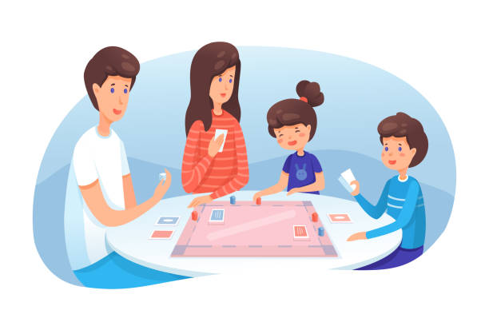

Jugar, crecer y convivir
Guía de juegos de mesa para todas las familias

guía 2023:
PDF
interactiva
guía 2022:
PDF
interactiva
guía 2020:
PDF
interactiva
Guía de iconos
Déjanos tus comentarios
Lugares de préstamo gratuito de juegos de mesa en Logroño:
Biblioteca municipal Rafael Azcona
La Gota de Leche